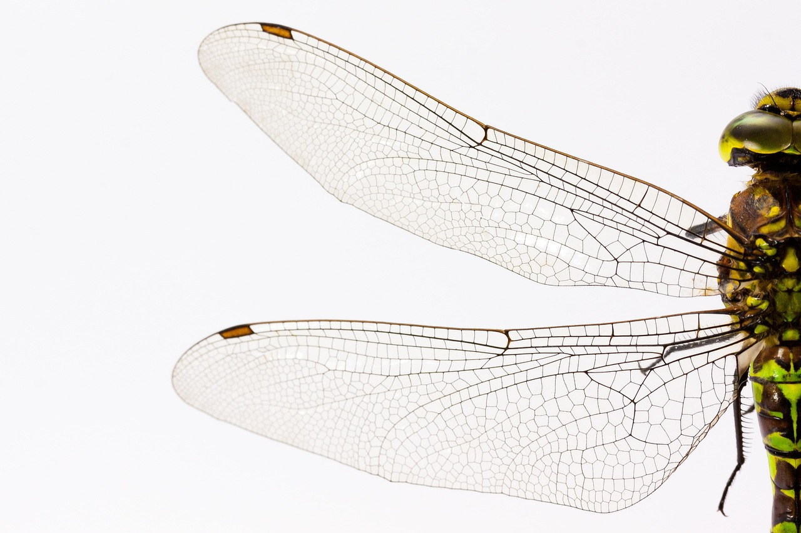
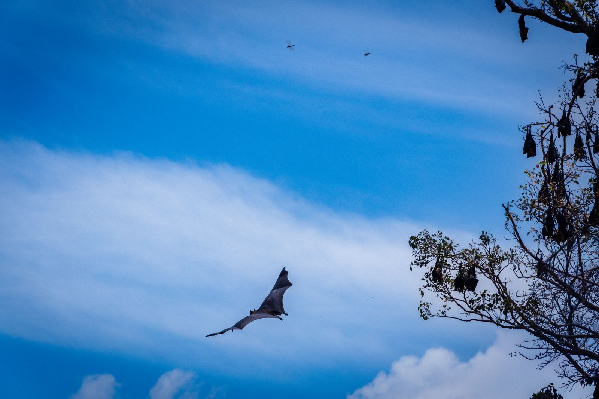

Глава 3
Летуны природы
Семена, насекомые, птерозавры, птицы и летучие мыши: как появился полёт и что может повторить бумага.
Полёт намного старше человека. Вот его первопроходцы — по порядку появления.

3.1 Семена, которые летают

Растение не может уйти из дома пешком. Поэтому его семена летают.
Крылатые семена — одни из самых древних летунов на Земле. Окаменелые семена с тремя и четырьмя крыльями найдены в породах позднего девона, им примерно 360–385 миллионов лет1,2. Семена придумали три приёма, и все три работают до сих пор.
Вращение. Отпустите крылатку клёна, и она завертится, как лопасть маленького вертолёта. На передней кромке вращающегося крыла сидит маленький вихрь и почти вдвое увеличивает подъёмную силу. Семя падает медленно, и ветер уносит его от дерева3,4.
Парашют. Семя одуванчика висит под хохолком примерно из 100 тонких волосков. Хохолок больше чем на девять десятых состоит из пустоты, но держится за воздух лучше сплошного диска. Воздух, проходя сквозь просветы, образует кольцо вихря, которое парит прямо над хохолком, не касаясь его5.
Планирование. Alsomitra macrocarpa, яванский огурец, даёт семя с тонким, как бумага, крылом около 13 см шириной6. Оно не вращается. Оно планирует, как маленький самолёт без хвоста. Люди его скопировали: см. раздел «Скопировано у природы» дальше в этой главе.
3.2 Первые летающие животные
Задолго до птиц небо принадлежало насекомым.
Представьте небо без птиц, летучих мышей и летающих рептилий. Около 100 миллионов лет оценка единственными крыльями у животных были крылья насекомых.
Самой древней общепризнанной окаменелости крылатого насекомого около 325 миллионов лет. Это похожее на поденку насекомое Delitzschala bitterfeldensis7. Исследование генов насекомых говорит, что первые крылья появились ещё раньше, около 406 миллионов лет назад8.
Более древние окаменелости трудно прочесть. Челюсть возрастом около 400 миллионов лет когда-то сочли признаком крылатого насекомого; исследование 2017 года считает, что она, возможно, принадлежит животному вроде многоножки9,10. Девонскую находку, описанную как насекомое в 2012 году, оспорили уже на следующий год11,12.
Откуда же взялись крылья? Птицы и летучие мыши превратили в крыло руку. Насекомые вырастили нечто новое, и учёные спорят об этом уже сто лет13. Одна идея: крылья выросли из плоских краёв спины. Другая: из выростов на ногах, немного похожих на жабры водных насекомых.
Недавние опыты с жуками и с крошечным рачком указывают на оба варианта сразу. Крыло могло возникнуть там, где часть спины встретилась с частью древней ноги14,15,16. Сегодня это главная идея, но не последнее слово.
3.3 Меганевры: великаны

У некоторых насекомых крылья были шире, чем два листа бумаги, положенные друг за другом.
Около 300 миллионов лет назад в болотистых каменноугольных лесах жили меганевры — родственники современных стрекоз. У Meganeura из Франции размах крыльев был около 70 см17,18.
Самое крупное из известных насекомых, Meganeuropsis permiana, жило немного позже там, где сейчас Канзас. Источники называют размах его крыльев от 71 до 74 см17,19.
Почему такие большие? Одна известная идея — кислород. Насекомые дышат через сеть крошечных трубочек, а в воздухе тогда, возможно, было до 35 % кислорода против 21 % сегодня20. Более богатый воздух мог проникать глубже в большое тело. Около 150 миллионов лет самые крупные насекомые росли и уменьшались вместе с кислородом21.
Потом эта связь нарушилась. После появления птиц насекомые оставались мельче, даже когда кислорода снова стало больше, — возможно, потому что их теперь могли ловить в воздухе21. Другие учёные отмечают, что у великанов не было летающих охотников, или считают, что кислород важнее всего был для молодых насекомых, живших в воде17,23. Кислород, вероятно, — часть истории, но не вся22.
Современные стрекозы мельче, но летают блестяще. Стрекоза может менять угол и скорость каждого из четырёх крыльев, поэтому умеет зависать, поворачивать и лететь в любую сторону24.
3.4 Птерозавры
Первые позвоночные, которые полетели, не были ни птицами, ни динозаврами.
Птерозавры — летающие рептилии. Музей естественной истории на одной странице называет для первых из них около 215 миллионов лет назад, на другой — 228 миллионов, поэтому мы пишем «215–228»25,26. Они жили до 66 миллионов лет назад25. Их ближайшие известные родственники, лагерпетиды, были маленькими бегающими рептилиями и летать не умели28.
Крыло птерозавра было тонкой кожей, натянутой от руки до ноги. Передний край держал один невероятно длинный палец25.
Самый крупный, Quetzalcoatlus, всё время меняет размер. В 1975 году его первооткрыватель оценил размах крыльев в 15,5 м29. Лучшие кости и точные расчёты его уменьшили. Исследование 2010 года сочло самыми надёжными верхними оценками 10–11 м и 200–250 кг30. Одиннадцать метров — это около 37 листов бумаги, выложенных друг за другом оценка.
Как взлетал великан? Птицы отталкиваются ногами. Исследование 2008 года предположило, что птерозавры использовали все четыре конечности: приседали и перепрыгивали через сложенные крылья, как прыгун с шестом31,30. Исследование кецалькоатля 2021 года согласилось, что взлёт на четырёх конечностях был возможен, но сочло возможным и сильный прыжок одними задними ногами32. Вопрос остаётся открытым.
3.5 Сначала перья, потом полёт

Птицы — это динозавры. А перья у динозавров появились раньше, чем кто-то из них полетел.
В 1996 году учёные в Китае описали синозавроптерикса — динозавра длиной около 1 м, покрытого тонкими, похожими на волосы перьями. Летать он не мог33. С тех пор перья нашли у многих динозавров.
Некоторые были огромными. Ютираннус, родственник тираннозавра длиной около 9 м, носил длинные нитевидные перья34,35. Даже у растительноядного кулиндадромеуса около 168 миллионов лет назад были похожие на перья нити36,37. Сначала появились перья, полёт — потом.
Археоптерикс жил около 150 миллионов лет назад; музей указывает 149–145 миллионов. Он был размером с сороку, с широкими крыльями из перьев, но ещё с острыми зубами и длинным костным хвостом. Все скелеты найдены в известняковых карьерах у Зольнхофена в Германии38.
Умел ли он летать? Музей пишет, что никто не знает, летал ли он по-настоящему или только планировал38. Исследование костей его крыла 2018 года говорит, что он махал крыльями39, а исследование 2025 года нашло особые внутренние перья крыла, которые указывают, что он был создан для полёта40.
Другие пернатые динозавры пробовали другие крылья. У микрораптора около 120 миллионов лет назад были длинные перья на руках и на ногах — четыре крыла. Вероятно, он умел планировать41,42.
3.6 Летучие мыши: руки, которые летают

Крыло летучей мыши — это рука с кожей между пальцами.
Летучие мыши — единственные млекопитающие, которые летают по-настоящему. Видов летучих мышей больше 1400 — это примерно каждый пятый вид млекопитающих43,49.
Их крыло — тонкая кожа, натянутая на руку и четыре очень длинных пальца44. Кожа полна датчиков: крошечные волоски на ней чувствуют поток воздуха45, а тонкие, как волос, мышцы внутри неё подстраивают крыло прямо в полёте46.
Самым древним найденным скелетам летучих мышей около 52 миллионов лет, они из Вайоминга47,48. Одна ранняя летучая мышь, онихониктерис, уже умела летать, но её уши говорят, что ориентироваться по эху она ещё не могла. Сначала появился полёт49.
У онихониктериса ещё были когти на всех пяти пальцах и короткие широкие крылья. Возможно, он летал, чередуя порхание и планирование49.
3.7 Планеристы леса
Некоторые животные никогда не машут крыльями. Они прыгают, раскрываются и нарочно падают вперёд.
Планирование возникало у млекопитающих по меньшей мере шесть раз независимо50. У белки-летяги есть покрытая шерстью кожная складка от запястья до лодыжки51. Обычный полёт — около 10 м, а с высокого дерева вниз по склону — около 80 м52.
Шерстокрыл из Юго-Восточной Азии — чемпион. Один зондский шерстокрыл пролетел около 145 м — больше футбольного поля53.
Летучий дракон раскрывает кожу на длинных рёбрах и перелетает с дерева на дерево, обычно примерно на 8 м за раз54.
У летучих змей вообще нет конечностей. Райская древесная змея прыгает, раздвигает рёбра, чтобы сплющить тело, и извивается в воздухе55,56. Извивы не напрасны: они не дают змее кувыркаться57. В опытах с 15-метровой башни змеи пролетали до 24 м58.
3.8 Рыбы и кальмары, которые летают
Некоторые лучшие планеристы живут в море.
Летучая рыба мчится к поверхности, раскрывает большие плавники, как крылья, и выпрыгивает. Её хвост продолжает бить по воде во время взлёта, как самолёт, разгоняющийся по полосе59.
В воздухе она скользит низко над волнами. Полёт у самой воды снижает сопротивление, а её плавники планируют почти так же хорошо, как крылья некоторых птиц60. Связывая полёты, касаясь моря и снова взлетая, летучая рыба может преодолеть около 400 м62.
Самый долгий полёт, который удалось засечь, длился 45 секунд. Японская съёмочная группа сняла его с парома в 2008 году63.
Кальмары тоже летают. В 2013 году японские учёные описали молодых океанских кальмаров, взлетающих из моря. Они выпускали струю воды, чтобы взлететь, раскрывали плавники и кожу между щупальцами, как крылья, планировали и ныряли обратно64,65. Их скорость доходила до 11,2 м в секунду, около 40 км/ч65 оценка.
3.9 Рекордсмены

Самый длинный путь, самый долгий полёт без посадки, самые широкие крылья.
Полярная крачка проводит северное лето в Арктике, а южное — у Антарктиды. Крошечные датчики показали, что некоторые крачки пролетают за год больше 80 000 км — примерно два оборота вокруг Земли66 оценка. За жизнь крачка может пролететь около 2,4 миллиона км — три раза до Луны и обратно68,69.
Малый веретенник летит без остановок. В октябре 2022 года молодой веретенник, известный только по номеру метки, 234684, пролетел около 13 560 км от Аляски до Тасмании за 11 дней и 1 час, ни разу не остановившись поесть или отдохнуть72. В 2007 году веретенник по имени E7 пролетел 11 680 км до Новой Зеландии70.
У странствующего альбатроса самые широкие крылья среди живых птиц: около 3,5 м, а у рекордной птицы, измеренной в 1965 году, — 3,63 м74. Это около двенадцати листов бумаги, выложенных друг за другом оценка.
Он почти не машет крыльями. У волн ветер слабее, выше — сильнее. Альбатрос взмывает в быстрый ветер, разворачивается и скользит вниз, набирая скорость на каждой петле. Это динамическое парение75,76. Замок в плече держит крылья раскрытыми75. Седоголовые альбатросы облетали весь земной шар, самый быстрый — за 46 дней78.
3.10 Как летает бабочка
Бабочка летает не как самолёт. Она хлопает.
Каждую осень бабочки-монархи из Канады и востока США летят на юг, в несколько горных лесов Мексики. Некоторые пролетают до 3000 миль, около 4800 км79. Бабочки, совершающие этот путь, живут до восьми месяцев — гораздо дольше своих родителей80.
Как такие нежные крылья с этим справляются? В аэродинамической трубе учёные наблюдали за бабочками-адмиралами сквозь струйки дыма. Те использовали много приёмов сразу: вихри на передней кромке крыла, воздух, который они только что взбили, и хлопки крыльями81.
Хлопок важен. При взмахе вверх гибкие крылья выгибаются чашей и ловят карман воздуха, потом смыкаются и выталкивают его назад струёй. Гибкие крылья делали этот толчок на 22 % сильнее, чем жёсткие82. Приём «хлопок и разлёт» впервые описали у крошечной осы в 1973 году83.
Машущее крыло создаёт подъёмную силу и ещё тягу — толчок вперёд85. Планёр только меняет высоту на дальность84. Монархи сочетают и то и другое, и взмахи обходятся им намного дороже: по одной ранней оценке, примерно в 28–31 раз больше энергии, чем планирование86. Бабочки этой книги только планируют; ваш бросок — их единственный толчок87.
3.11 Скопировано у природы

Люди больше ста лет заимствуют крылья у природы.
Отто Лилиенталь годами наблюдал за чайками, цаплями и аистами и даже держал молодых аистов у себя в саду. В 1889 году он издал книгу о полёте птиц как основе воздухоплавания — ещё до полётов на своих планёрах88. Братья Райт видели, как грифы скручивают концы крыльев, чтобы удержать равновесие, и стали скручивать крылья своего самолёта так же89.
Семя яванского огурца долетело до Австрии. В 1897 году немецкий профессор Фридрих Альборн описал его как образец для летательных машин. Иго Этрих и Франц Вельс построили бесхвостый планёр такой формы. Затем Этрих дал крылу-семени корпус и хвост: так появился «Этрих Таубе», то есть «голубь», впервые испытанный в апреле 1910 года90,91.
Инженеры и сейчас копируют семена. Lockheed Martin назвала свой однокрылый вращающийся дрон Samarai в честь крылаток клёна93. Крылатые микросхемы размером с песчинку опускаются, вращаясь, как семена94. Датчики, которые летят, как семена одуванчика, при умеренном ветре уносятся до 100 м95.
И животных. Bat Bot, робот массой 93 г, летает на тонких силиконовых крыльях, как у летучей мыши96. DelFly Nimble повторяет быстрые повороты, которыми спасается плодовая мушка97. Загнутые вверх законцовки на крыльях многих лайнеров начались с инженера NASA, который думал о кончиках крыльев парящих птиц98.
3.12 Ваши бумажные летуны
Три модели этой книги заимствуют идею из этой главы.
Бумажная крылатка клёна, таблица F2, вращается при падении, как семя из первого раздела. Это классическая модель, и наша версия ещё не измерено.
Бабочки, таблицы B1–B3, — экспериментальные планёры с крыльями монарха, морфо и махаона. Они планируют, а не машут. Это концепция, пока записанное лётное испытание не скажет иначе87.
У кольцевого планёра, таблица F1, нет животного двойника, которого мы могли бы подтвердить источником. Он здесь потому, что показывает: крыло не обязано быть плоским.